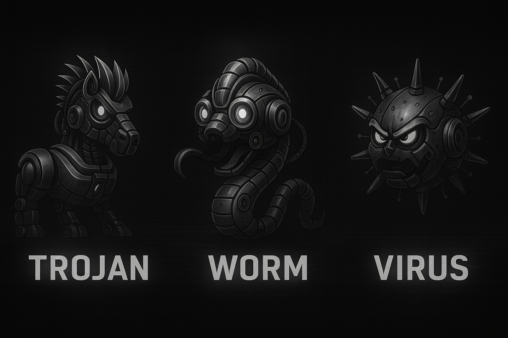

What is Malware?
Malware (short for malicious software) Malware is software deliberately built to infiltrate devices and networks so attackers can steal data, disrupt operations, extort money, or hijack computing power. It comes in many forms, including viruses that attach to files, worms that spread on their own, Trojans that pose as legitimate apps, and families like spyware, adware, ransomware, and even fileless strains that run from memory. Criminals use it to exfiltrate emails and passwords, lock systems for ransom, vandalize or destroy machines, and conscript hardware into botnets or cryptomining. Source.